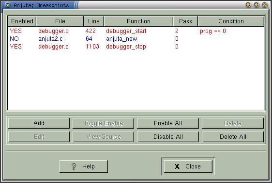
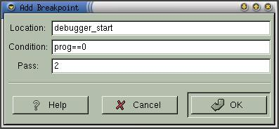

|
|
Anjuta Manual version 0.1Copyright (c) Kh. Naba Kumar Singh |
| Contents | Index | Shortcuts |
| PREV:Debugging | UP:Contents(Debugging) | NEXT:Running the program |
While you are debugging a program you would like to break the execution of the program at some location, probably because you want to study the state of the execution at that location. Breakpoints are what that come into picture. You set breakpoints at different locations in your source file and let the program run. When it encounters any breakpoint, it will suspend the execution of the program. You can then do whatever you want, such as evaluate expressions, inspect variables, study the stack trace etc at that location.

By Location, I mean the location of the code in your source file. You will be frequently prompted for locations. Location can be specified in any of the following formats:
The first one is very obvious. The location refers to the line number "Line_number" in the source file "File". The second one refers to the first line of the function "Function_name". The third one is similar to the second one except that it is used when you have more than one function with the name "Function_name" in your program. You differentiate them by giving "File" which will refer to the function "Function_name" in the file "File".
With every breakpoint, You may associate two parameters. They are:
The Break condition is a valid C expression which should evaluate to a boolean data. That is The evaluation of the expression should result in either TRUE(1) or FALSE(0). If the final evaluation value is not a boolean data, then it will be appropriately type casted to boolean data.
Every time the breakpoint is encountered during the execution, the break condition will be evaluated. The debugger will break the execution only if the evaluation results in a TRUE value, otherwise it will continue the execution as though there had been no breakpoint.
The pass count is an integer (unsigned) value which tells the debugger to skip the breakpoint that many times before it is considered. Pass count has higher priority than the break condition. Only when the pass count reaches zero will the debugger evaluate the break condition (if it is present). If there is no break condition, the debugger will break the execution on pass count zero.
The default value of Break condition is always TRUE. That is the debugger will break the execution at the breakpoint location.
The default value of the Pass count is zero. That is the breakpoint will be considered on its first encounter itself.
Bring up the 'Breakpoints editing window' by activating View->Breakpoints or Debug->Breakpoints->Breakpoints. Click Add button. A breakpoint add dialog box will appear (as shown below).

Enter the location where you want to set the breakpoint. Optionally, you may also enter the Break condition and the Pass count in the appropriate entry boxes. Click OK to set the breakpoint.
Alternatively, you may also set the breakpoint by highlighting the function name in the editor and activating Debug->Breakpoints->Set Breakpoint ( or clicking the Set breakpoint icon on the Debug Toolbar).
Bring up the 'Breakpoints editing window' by activating View->Breakpoints or Debug->Breakpoints->Breakpoints. Select the breakpoint you want to edit and Click Edit button. A breakpoint edit dialog box will appear (as shown below).
Edit the entries according to your new settings and click OK to commit the changes.
Bring up the 'Breakpoints editing window' by activating View->Breakpoints or Debug->Breakpoints->Breakpoints. Select the breakpoint you want to delete and Click Delete button. This will delete the breakpoint.
If you want to delete all the breakpoints, then click Delete All.
Enabling and disabling breakpoint:
Bring up the 'Breakpoints editing window' by activating View->Breakpoints or Debug->Breakpoints->Breakpoints. Select the breakpoint you want to enable or disable and Click Toggle Enable button. This will enable or disable the breakpoint.
If you want to enable all or disable All breakpoints, instead of clicking Toggle Enable button, click Enable All or Disable All button
Things to note:
When you start the debugger, all the breakpoints will be set. Those breakpoints which are old (i.e.. the source file is more recent than the breakpoint), will be disabled.